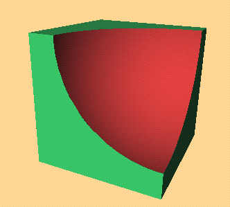

Copyright © 1994, 1996, 1999 Information Geometers Ltd and The University of Bath
This program creates a block with a spherical chunk missing that looks like this:

Block with sphere subtracted modelled and polygonalized by svLis, then rendered in real time using a Z-buffer.
// Program to make a block with a bite.
// Definitions for svLis
#include "svlis.h"
// Definitions for standard colours
#include "sv_cols.h"
int main()
{
// Start svLis.
svlis_init();
// Define the block's corners.
sv_point corner_a = sv_point(0,0,0);
sv_point corner_b = sv_point(1,1,1);
// Make the cube; it will be a set
sv_set block = cuboid(corner_a, corner_b);
// Colour it green - note British spelling...
// Note also that member functions have no side effects,
// so we assign the coloured block to the sv_set block.
block = block.colour(SV_GREEN);
// Define a sphere centred on one corner, radius 0.8
sv_set sph = sphere(corner_b, 0.8).colour(SV_RED);
// Subtract the sphere from the cube.
block = block - sph;
// Define a box in space which contains the things
// we're interested in.
corner_a = sv_point(-1, -1, -1);
corner_b = sv_point(2, 2, 2);
sv_box interesting = sv_box(corner_a, corner_b);
// Make a svLis model by combining the shape
// and the region of interest.
sv_model m = sv_model(block, interesting);
// Facet the model m - this makes polygons for
// plotting - then plot the picture of them.
m = m.facet();
plot_m_p_gons(m);
// That's all, folks.
return(svlis_end(0));
}